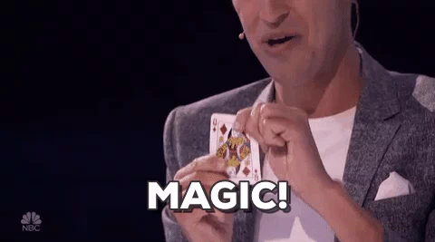

IBA A QUEJARME EN TWITTER Y ME LIE
Buenos días
Me llamo Jorge Aznar y trabajo como front{data} en Shokesu.
WHYYYYYY?
SIDE PROJECTS/PET PROJECTS/MIS MOVIDAS
VISUALIZAR UN PROBLEMA üßê
CURIOSIDAD üïµü誂Äç
APRENDER ALGO NUEVO üë®ü誂Äçüíª
INSPIRACIÓN
MI MADRE ❤️
DISCUTIR CON AMIGOS ü§ê
MOVIDAS QUE ME PASAN ü§∑‚Äç‚ôÄÔ∏è
TRABAJANDO... üë®ü誂ÄçüíªÔ∏è
RECICLA COMO PUEDAS!

OCTUBRE DE 2016
Zaragoza > Organización > El pleno > Sesiones Plenarias > Elige año > suerte
ACCESIBLE ≄ ACCESIBILIDAD
BISLAI
VISUALIZAR
BUSCAR
DATOSDATOSDATOSDATOSDATOSDATOSDATOSDATOSDATOSDATOSDATOSDATOSDATOSDATOSDATOS
NODE + LODASH

mociones = JSON.parse(fs.readFileSync('mociones/mociones.json','utf8'));
$presentada = _.countBy(mociones, function(res) {
return (res.presentada)
})
fs.writeFile('estadisticas/presentada.json', JSON.stringify($presentada, null, 2), function(err)
{
if (err) {
throw err;
}
});
{
"C'S": 103,
"ZEC": 73,
"PP": 119,
"PSOE": 139,
"CHA": 100,
"PP + PSOE + C'S": 3
}